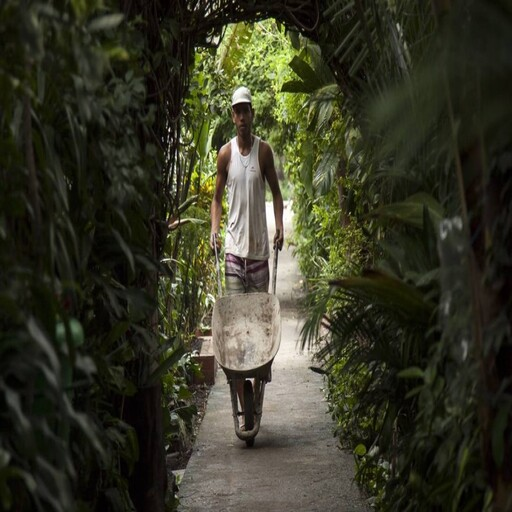

Boas Práticas
Ajude a preservar este paraíso ecológico e respeite a comunidade local.
A Ilha da Gigóia é um lugar especial que combina natureza, comunidade local e turismo. Para que todos possam aproveitar a visita e para preservar o ambiente da ilha, algumas boas práticas são importantes.
Respeite a natureza
A região faz parte do ecossistema da Lagoa da Tijuca, que abriga diversas espécies de aves, peixes e outros animais. Durante a visita, evite jogar lixo na água ou nas áreas naturais e ajude a manter o local limpo e preservado.
Valorize os negócios locais
A ilha possui diversos restaurantes, bares e pequenos empreendimentos administrados por moradores. Sempre que possível, valorize o comércio local e aproveite para conhecer a gastronomia e os produtos da região.
Mantenha o ambiente tranquilo
A Ilha da Gigóia é conhecida pelo clima relaxante e pela atmosfera de vila. Respeite os moradores e evite barulho excessivo, principalmente em áreas residenciais.
Utilize os pontos de embarque com segurança
Ao utilizar os barcos para a travessia, aguarde sua vez de embarcar e siga as orientações dos barqueiros. A travessia é rápida e segura quando realizada com organização e atenção.
Cuide do lixo
Sempre utilize lixeiras ou leve seu lixo com você até encontrar um local adequado para descartá-lo. Pequenas atitudes ajudam a manter a ilha bonita e agradável para todos.
